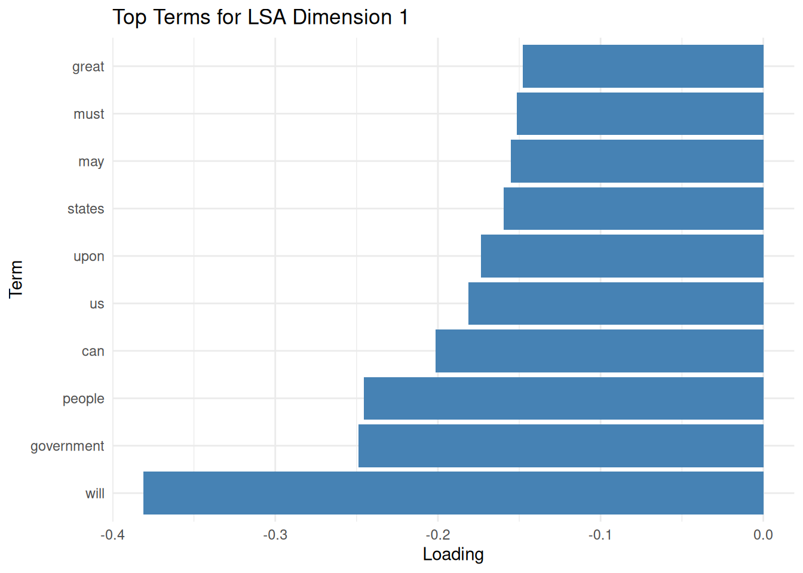
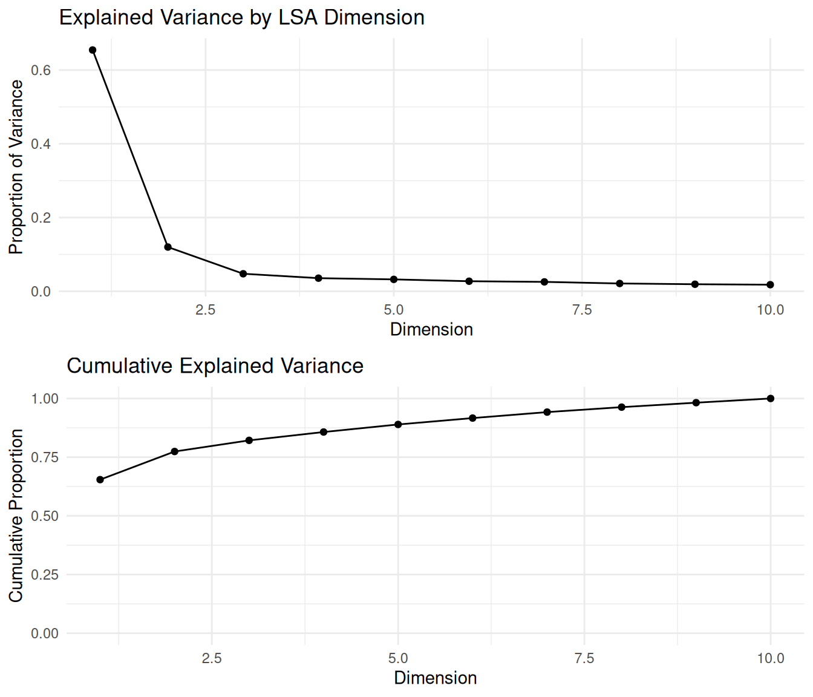

8.4 Latent Semantic Analysis (LSA)
Finally, we will look at Latent Semantic Analysis (LSA), a matrix factorization technique that uses Singular Value Decomposition (SVD) on a term-document matrix to uncover latent semantic structures. Unlike probabilistic models like LDA or STM, LSA is algebraic and assumes that semantically similar terms appear in similar documents.
We’ll use the textmodel_lsa() function from the quanteda.textmodels package to perform LSA on the U.S. Presidential Inaugural Corpus.
Before applying LSA, we need to load the necessary R libraries and prepare the text data:
library(quanteda)
library(quanteda.textmodels)
library(dplyr)
library(tidyr)
library(ggplot2)
data("data_corpus_inaugural")
inaugural_tokens <- tokens(data_corpus_inaugural, remove_punct = TRUE, remove_symbols = TRUE,
remove_numbers = TRUE) %>%
tokens_tolower() %>%
tokens_remove(stopwords("en"))
inaugural_dfm <- dfm(inaugural_tokens)With the data preprocessed and organized into a document-feature matrix, we are ready to fit the LSA model. We use the textmodel_lsa() function, specifying the document-feature matrix and the desired number of latent dimensions (nd). Again, choosing the optimal number of dimensions often requires experimentation and evaluation, which we will look at in the validation section. Setting a random seed ensures that the results are reproducible.
set.seed(42)
# Fit LSA with 10 dimensions. The number of dimensions (nd) determines the size
# of the reduced semantic space.
n_dims <- 10
lsa_model <- textmodel_lsa(inaugural_dfm, nd = n_dims)
lsa_model## [[ suppressing 33 column names 'fellow-citizens', 'senate', 'house' ... ]]After fitting the LSA model, we can explore the term loadings. Term loadings indicate the association of each term (word) with each of the discovered latent dimensions. High positive or negative loadings suggest that a term is strongly associated with a particular dimension. By examining the terms with the highest absolute loadings for each dimension, we can begin to interpret the semantic meaning captured by that dimension. We extract the term loadings from the model, convert them into a tidy data frame, and then identify the top terms for each dimension based on the absolute value of their loadings. Visualizing the top terms for a dimension, as shown in the optional plot, can aid in this interpretation.
term_matrix <- as.data.frame(lsa_model$features)
colnames(term_matrix) <- paste0("Dim", 1:n_dims) # Rename columns
term_matrix$term <- rownames(term_matrix) # Add the actual terms as a column
term_long <- term_matrix %>%
pivot_longer(cols = starts_with("Dim"), names_to = "Dimension", values_to = "Loading")
top_terms <- term_long %>%
group_by(Dimension) %>%
slice_max(abs(Loading), n = 10, with_ties = FALSE) %>%
arrange(Dimension, -abs(Loading))
ggplot(filter(top_terms, Dimension == "Dim1"), aes(x = reorder(term, Loading), y = Loading)) +
geom_col(fill = "steelblue") + # Create a bar chart with the loading on the x-axis and term on the y-axis.
coord_flip() + # Flip the coordinate axes to make term labels easier to read.
labs(title = "Top Terms for LSA Dimension 1", x = "Term", y = "Loading") + # Add plot title and axis labels.
theme_minimal() # Use a minimal theme for a clean plot.
Similar to term loadings, we can explore document loadings. Document loadings represent the association of each document with each latent dimension. Documents with high positive or negative loadings on a particular dimension are estimated to be strongly related to the semantic concept captured by that dimension. By examining the documents with the highest loadings for each dimension, we can see which texts most represent the themes identified by LSA. We extract the document loadings and identify the top documents for each dimension based on their positive loadings.
doc_matrix <- as.data.frame(lsa_model$docs)
colnames(doc_matrix) <- paste0("Dim", 1:n_dims)
doc_matrix$document <- docnames(inaugural_dfm)
doc_long <- doc_matrix %>%
pivot_longer(cols = starts_with("Dim"), names_to = "Dimension", values_to = "Loading")
top_docs <- doc_long %>%
group_by(Dimension) %>% # Group by dimension to find top documents within each dimension.
slice_max(Loading, n = 5, with_ties = FALSE) %>% # Select the top 5 documents based on positive loading.
arrange(Dimension, -Loading) # Arrange the results for better readability.By examining the most positively and negatively associated terms and documents per dimension, we can interpret the latent semantic “concepts” discovered by LSA. Overall, LSA is useful for:
- Similarity: Comparing documents based on their LSA vectors.
- Keywords: Finding terms similar to a query term in the LSA space.
- Summarization: Identifying key sentences representing the document’s main dimensions.
- Reducing dimensionality: Using the LSA dimensions as features for subsequent supervised learning tasks.
So, how do we validate an LSA? As with LDA, our validation assesses how well the reduced-dimensionality space captures the original data structure and semantic relationships. To begin with, we can look at how much variance each dimension explains. This helps determine how many dimensions to keep by looking for an “elbow” point, where additional dimensions offer diminishing returns. The explained variance for each dimension is proportional to the square of its corresponding singular value from the SVD.
# Extract singular values from the LSA model.
singular_values <- lsa_model$sk
# Compute the proportion of variance explained by each dimension
explained_variance <- singular_values^2 / sum(singular_values^2)
# Compute the cumulative variance.
cumulative_variance <- cumsum(explained_variance)
variance_df <- data.frame(
Dimension = seq_along(explained_variance), # Dimension number.
Explained = explained_variance, # Proportion of variance explained by each dimension.
Cumulative = cumulative_variance # Cumulative proportion of variance explained.
)We can easily visualize the individual and cumulative variance explained to identify a good cutoff point for dimensionality. This helps select the number of dimensions (nd) to use, balancing dimensionality reduction with retaining sufficient information.
##
## Caricamento pacchetto: 'gridExtra'## Il seguente oggetto è mascherato da 'package:dplyr':
##
## combinep1 <- ggplot(variance_df, aes(x = Dimension, y = Explained)) +
geom_line() + geom_point() + # Add lines and points.
labs(title = "Explained Variance by LSA Dimension", # Add title and labels.
x = "Dimension", y = "Proportion of Variance") +
theme_minimal()
p2 <- ggplot(variance_df, aes(x = Dimension, y = Cumulative)) +
geom_line() + geom_point() + # Add lines and points.
labs(title = "Cumulative Explained Variance", # Add title and labels.
x = "Dimension", y = "Cumulative Proportion") +
ylim(0, 1) + # Set y-axis limits from 0 to 1.
theme_minimal()
# Arrange the plots vertically.
grid.arrange(p1, p2, ncol = 1)
These plots help us determine the ideal number of dimensions to retain by identifying where the cumulative curve levels off—a common strategy known as the “elbow method.” Choosing the dimensionality is a trade-off between reducing noise and computational complexity versus preserving semantic information.
Another way to validate LSA is to examine whether semantically similar words are close together in the latent space. We compute the cosine similarity between LSA-generated vectors for selected terms. Terms used in similar contexts should have high cosine similarity in the LSA space.
##
## Caricamento pacchetto: 'coop'## Il seguente oggetto è mascherato da 'package:quanteda':
##
## sparsityterm_vectors <- lsa_model$features
# Choose a set of semantically related terms for validation.
selected_terms <- c("america", "united", "states", "freedom", "liberty", "war", "peace")
selected_term_vectors <- term_vectors[selected_terms, , drop = FALSE]
term_similarity <- cosine(t(selected_term_vectors))We expect related terms (e.g., “freedom” and “liberty”) to have high cosine similarity. This indicates that LSA captures semantic relationships effectively. Unrelated terms should have lower cosine similarity.
Similarly, we can validate whether semantically similar documents are close in the latent space. Again, we use cosine similarity on the LSA vectors of selected presidential speeches. Documents that discuss identical themes or are from similar historical periods might be expected to have a higher similarity.
doc_vectors <- lsa_model$docs
docnames_all <- docnames(inaugural_dfm) # Get all document names.
# Select documents of interest by their names for validation.
selected_docs <- c("1789-Washington", "1861-Lincoln", "2001-G.W.Bush", "2009-Obama")
selected_doc_vectors <- doc_vectors[docnames_all %in% selected_docs, , drop = FALSE]
# Compute cosine similarity between selected document vectors.
doc_similarity <- cosine(t(selected_doc_vectors))By interpreting this matrix, we can observe whether documents from similar eras or with similar themes cluster together—an indicator that LSA is capturing meaningful structures. For instance, one might expect speeches from presidents in closer periods or from the same political party to exhibit higher similarity than those from vastly different eras or parties.